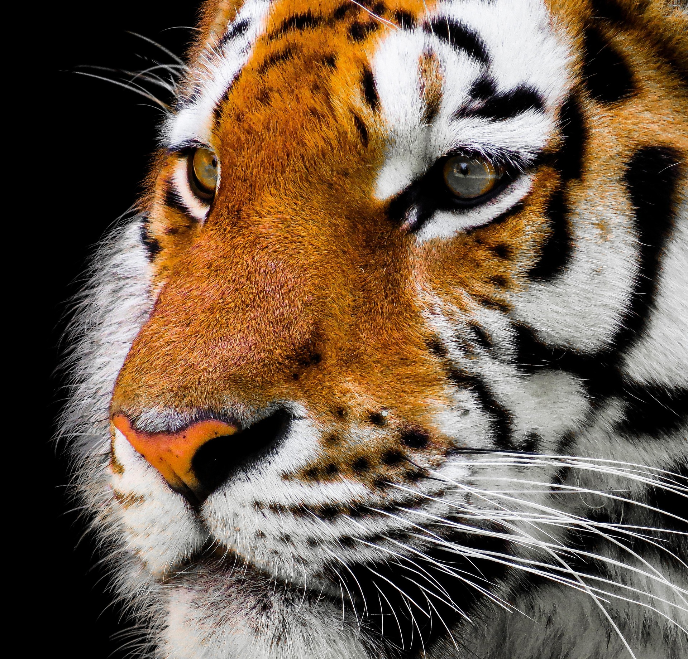

Tigre de Bengala
(Panthera tigris tigris)

El tigre de bengala vive principalmente en el subcontinente indio, con la mayor población en la India y Bangladés, además de Nepal, Bután, Birmania y Tíbet. Habita en diversos ecosistemas, Prefiriendo zonas con cobertura vegetal, aguacercana y presas abundantes, bosques tropicales húmedos, manglares (como los Sundarbans),sabanas y pastizales altos.
Caracteristicas
Pagina Principal